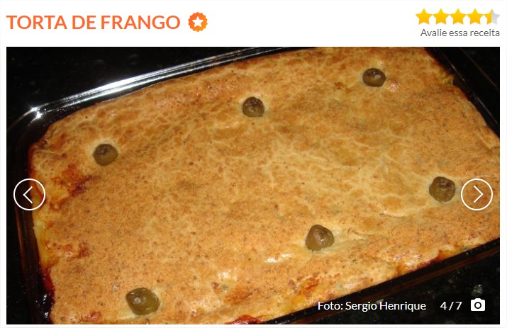

Tela inicial

INGREDIENTES
Recheio:
- 500 g de peito de frango sem pele
- 1/2 litro de caldo de galinha
- 4 colheres (sopa) de óleo
- 1 dente de alho amassado
- 1 cebola picada
- 3 tomates sem pele e sem sementes
- 1 xícara (chá) de ervilhas
- sal e pimenta-do-reino a gosto
Massa:
- 250 ml de leite
- 3/4 de xícara (chá) de óleo
- 2 ovos
- 1 e 1/2 xícara (chá) de farinha de trigo
- sal a gosto
- 1 colher (sopa) de fermento em pó
- queijo ralado a gosto
MODO DE PREPARO
Recheio:
- Cozinhe o peito de frango no caldo até ficar macio.
- Separe 1 xícara (chá) de caldo do cozimento e reserve.
- Refogue os demais ingredientes e acrescente as ervilhas por último.
- Desfie o frango, misture ao caldo e deixe cozinhar até secar.
Massa:
- Bata o leite, o óleo e os ovos no liquidificador em velocidade baixa.
- Acrescente aos poucos a farinha, o sal e o fermento.
- Despeje metade da massa em uma forma untada e adicione o recheio sobre ela.
- Cubra com o restante de massa e o queijo ralado.
- Leve ao forno preaquecido (180° C) até dourar.